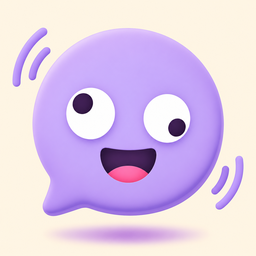

Backspin questions and answers
Backspin: Reverse Your Voice
How does the reverse singing challenge work?
Say or sing a short line and the app plays it backwards. You copy that backwards sound as closely as you can, then the app reverses your copy so it plays forwards again. The closer your copy, the more it sounds like the original line.
Is there a reverse singing app that scores you?
Yes. Backspin flips your copy forwards and scores its sound, rhythm and length so you can see how close you got.
Is there a reverse singing app with no ads?
Backspin has no ads and no subscription. The first 10 scored rounds are free with everything on; Backspin Plus is a one-time A$1.99 (Google Play shows your local price) for unlimited rounds.
Can I play reverse singing with friends on one phone?
Yes. Party mode passes one phone around. In Copy it, each player copies a line and the closest wins. In Guess it, one player records secretly and the others hear only the backwards copy and guess the line. Up to 8 players.
How much does Backspin cost?
Free to download with 10 scored rounds. Backspin Plus is one optional lifetime purchase of A$1.99 in Australia. Saved takes stay playable and shareable without it.
What does Backspin Plus add?
Unlimited scored rounds, every challenge pack (950+ lines), all voice effects, party mode for up to 8 players, and unlimited saved takes and 30-second takes.
Can I slow down the backwards clip to practise?
Yes. Loop or slow down the backwards clip while you practise.
Can I share my reverse singing attempt?
Yes. Save takes on your phone and share a four-part clip: the original, the backwards version, your copy and your copy flipped.
Does Backspin upload my voice?
No. Recording and audio processing happen on your phone, and Backspin doesn't upload your recordings. You choose when to share them.
Is Backspin on iPhone?
Not yet. Backspin is Android only for now, on Google Play.
Is there a daily challenge?
Yes. Pick a daily challenge, or play a quick round or freestyle with any line you like.